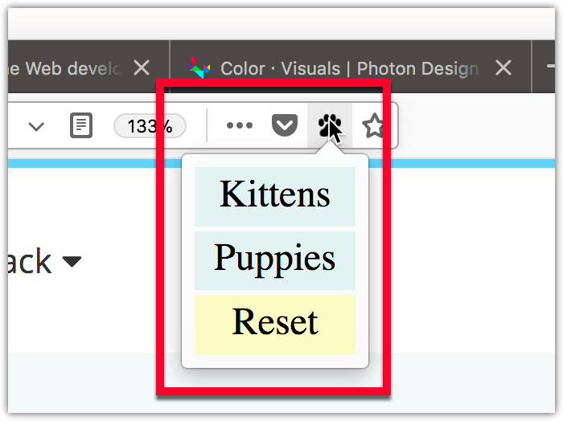

A popup is a dialog that's associated with a toolbar button or address bar button. This page describes popups in general, specifying them, debugging, resizing, and designing them, as well as examples of use.

When the user clicks the button, the popup is shown. When the user clicks anywhere outside the popup, the popup is closed. The popup can be closed programmatically by calling window.close() from a script running in the popup. However, you can't open the popup programmatically from an extension's JavaScript; it can be opened only in response to a user action.
You can define a keyboard shortcut that opens the popup using the "_execute_browser_action" and "_execute_page_action" shortcuts. See the documentation for the manifest.json key commands.
The popup is specified as an HTML file, which can include CSS and JavaScript files, as a normal web page does. Unlike a normal page, though, the JavaScript can use all the WebExtension APIs that the extension has permissions for.
The popup's document is loaded every time the popup is shown, and unloaded every time the popup is closed.
The HTML file is included in the extension and specified as part of the browser_action or page_action key by "default_popup" in the manifest.json:
"browser_action": {
"default_icon": "icons/beasts-32.png",
"default_title": "Beastify",
"default_popup": "popup/choose_beast.html"
}
You can ask the browser to include a stylesheet in your popup that will make it look consistent with the browser's UI. To do this, include "browser_style": true in the browser_action or page_action key.
Popups have a Content Security Policy that restricts the sources from which they can load resources, and disallows some unsafe practices such as the use of eval(). See Content Security Policy for more details on this.
You can debug a popup's markup and JavaScript using the Add-on Debugger, but you'll need to turn on the Disable popup auto-hide feature to prevent popups from hiding when you click outside them. Read about debugging popups.
Popups resize automatically to fit their content. The algorithm for this may differ from one browser to another.
In Firefox, the size is calculated just before the popup is shown, and at most 10 times per second after DOM mutations. For strict mode documents, the size is calculated based on the layout size of the <body> element. For quirks mode, it's the <html> element. Firefox calculates the preferred width of the contents of that element, reflows it to that width, and then resizes so there's no vertical scrolling. It will grow to a size of 800x600 pixels at most if that fits on the user's screen. (Prior to Firefox 60 it was only 680px.) If the user moves the extension's button to the menu or it appears in the toolbar overflow, then the popup appears inside the menu's panel and is given a fixed width.
When setting the popup width in CSS, you should set the it in the <body> and not in the :root.
In Firefox Android 57, the popup is shown as a normal page in a new tab.
For details on how to design your popup's web page to match the style of Firefox, see the Photon Design System documentation.
The webextensions-examples repository on GitHub includes the beastify example, which implements a browser action with a popup.